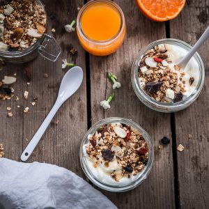

Granola aux amandes

Aujourd’hui je vous retrouve avec la recette du granola aux amandes qui avait accompagné il y a quelque temps notre salade de riz à l’avocat et à l’orange et comme c’est le début du week-end c’est le moment idéal pour se préparer un bon petit brunch et se lancer dans ce type de recette!
Le granola on adore ça mais la seule condition c’est qu’il soit fait maison car les versions industrielles sont beaucoup trop de sucrées et autres cochonneries dont on préfère se passer. J’avais d’ailleurs publié il y a très longtemps ma recette « basique » de granola qui n’est pas très différente de celle-ci finalement sauf que cette version aux amandes étaient tellement tellement bonne qu’il fallait que je partage la recette ici. Comme dans 90% de mes petits déjeuners on retrouve du chocolat car oui je commence et finis toujours ma journée par un carré de chocolat noir c’est vraiment mon petit plaisir alors je me voyais mal ne pas mettre de morceaux de chocolat dans cette version du granola. Si vous n’êtes pas plus fan que ça du granola dans un verre de lait ou que vous avez envie de varier un petit peu les plaisirs vous pouvez le manger avec une compote de pommes ou une compote de n’importe quel autre fruit d’ailleurs mais aussi avec du fromage tel que de la brousse ou de la faisselle, c’est très bizarre et peu commun je pense mais moi j’adore. Si vous aimez ce qui est bon, gourmand, sain et si vous aimez les amandes, le chocolat et les recettes rapides et faciles vous devriez aimer celle-ci! Si vous n’avez pas d’idées pour le petit déjeuner de dimanche voici une idée à décliner à l’infini avec ce qu’il y a dans vos placards! Je vous souhaite de passer un très bon week-end et je vous laisse lire tranquillement la recette.
Ingrédients
- Flocons d'avoine - 400g
- Amandes entières concassées - 150g
- Amandes effilées - 1 bonne poignet
- Sirop d'érable - 3 càs
- Graines de tournesol - 1 petite poignet
- Facultatif : extrait d'amande amère ou extrai de vanille - 1càs
- Purée d'amandes - 4 càs
- Sel - 1 pincée
- Facultatif : Morceaux de chocolat (blanc et noir pour moi) - ici 80g vous pouvez en mettre + ou -
- Baies de Goji - 1 poignée
- Cranberries - 1 poignée
Instructions
- Préchauffez le four à 180°
- Dans un saladier, mélanger les flocons d'avoine avec les amandes Pour ceux qui ne veulent pas mélanger les amandes pour ne pas les faire griller, ne les mélanger pas aux flocons d'avoine, vous les rajouterez en fin de préparation
- Ajoutez la purée d'amandes, le sirop d'érable et mélangez bien le tout afin de bien répartir la purée d'amandes et le sirop d'érable sur l'ensemble de vos flocons d'avoine
- Répartissez le mélange sur une plaque à pâtisserie
- Enfournez à 180° pendant 30 minutes
- Pensez à remuer au moins 3 fois pendant la cuisson pour cuire le granola uniformément
- Laissez refroidir le granola puis ajoutez du chocolat cassé en morceaux, des baies de Goji, cranberries, amandes grillées effilées et amandes entières concassées si vous ne les avez pas mélangés avec les flocons d'avoine
- Conserver le granola dans un bocal hermértique
- Dégustez le granola à l'occasion d'un brunch, d'un goûter ou encore au petit déjeuner!
Les tips de la communauté
Recette avec très peu de commentaires. Une question sur la durée de conservation indique de l'intérêt pour préparer à l'avance.